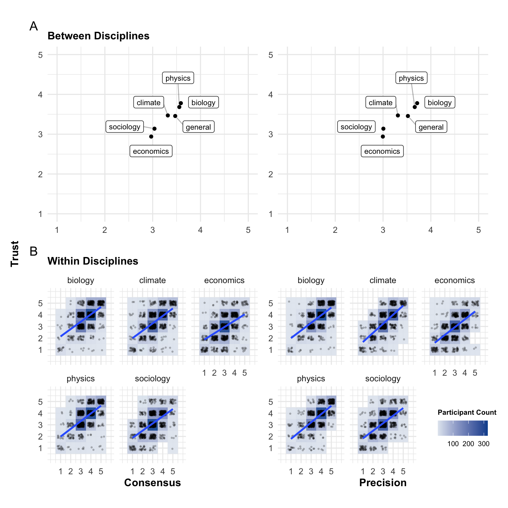

Overall, 1012 (100%)1 | |
|---|---|
Gender | |
Woman | 502 (50%) |
Man | 500 (49%) |
Prefer to self-describe | 6 (0.6%) |
Prefer not to say | 4 (0.4%) |
Age | |
Mean (SD) | 44.6 (14.9) |
Median | 45.0 |
Min, Max | 18.0, 88.0 |
Education | |
Did not attend school | 2 (0.2%) |
Primary education | 6 (0.6%) |
Secondary education (e.g., high school) | 350 (35%) |
Higher education (e.g., university degree or higher education diploma) | 654 (65%) |
Income | |
Mean (SD) | 28,728.2 (39,415.5) |
Median | 25,000.0 |
Min, Max | 0.0, 960,000.0 |
Residence | |
Rural | 484 (48%) |
Urban | 528 (52%) |
Religious | |
Not religious at all (1) | 502 (50%) |
(2) | 169 (17%) |
(3) | 203 (20%) |
(4) | 103 (10%) |
Very strongly religious (5) | 34 (3.4%) |
1n (%) | |
6 The French trust more the sciences they perceive as precise and consensual
Abstract
Past research has shown that in the US, people’s trust in science varies considerably between disciplines. Here, we show that this is the case also for France: A representative sample of the French population (N = 1,012) trusted researchers in biology and physics more than researchers studying climate science, economics, or sociology. We further show that trust differences within and between disciplines are associated with perceptions of consensus and precision: the more precise and consensual people perceive findings of a discipline to be, the more they tend to trust it. While these findings remain correlational, they are predicted by the rational impression account of trust in science, and they could have practical implications in terms of science communication.
available as a preprint here:
Pfänder, J., & Mercier, H. (2025). The French trust more the sciences they perceive as precise and consensual. https://doi.org/10.31219/osf.io/k9m6e_v1
6.1 Introduction
Past research has shown that in the US, people’s trust in science varies considerably between disciplines. For example, Altenmüller, Wingen, and Schulte (2024) found that among 20 different scientific disciplines, participants trusted (for instance) mathematicians, physicists and biologists more than climate scientists or historians, who in turn were more trusted than economists or political scientists. Analyzing trust in 45 different disciplines, Gligorić, Kleef, and Rutjens (2024) found that participants trusted neuroscientists the most, closely followed by various specialists in physics and biology. Psychologists, sociologists, economists and political scientists were trusted less.
Several explanations have been put forward to account for these differences. Altenmüller, Wingen, and Schulte (2024) showed that people assign different political inclinations to scientists in different disciplines. For example, people consider climate scientists to be liberal while they tended to see economists as more conservative (although all scientists of all disciplines were perceived to be rather liberal, with some as disciplines seen as moderate, but none as clearly conservative). Conservative participants trusted conservative scientists more and liberal participants would trust liberal scientists more. Gligorić, Kleef, and Rutjens (2024) have shown that people perceive some scientists–such as physicists–as more competent (than other scientists), while some–such as zoologists–as warmer, with both dimensions contributing to overall trust (see also Fiske and Dupree 2014). Laypeople also appear to believe that some disciplines are more ‘scientific’ than others–for example physics and biology by comparison with economics or sociology (Gauchat and Andrews 2018). On the whole, these beliefs about how scientific a discipline is track how much people trust it. However, it’s unclear what leads to these beliefs in the first place.
The current research makes two contributions. First, past research on trust differences between scientific disciplines has focused on the US. We seek to extend the findings above to a different country: France. Although we expect to see broadly similar patterns, some differences with US results might also be obtained, for instance with regards to climate science, which tends to be particularly polarizing in the US (Smith, Bognar, and Mayer 2024; Huang 2021).
Second, we seek to better understand why some disciplines are more trusted than others, in particular by relying on the rational impression account of trust in science. This account suggests that people come to trust science because they are impressed by scientific findings, and that even if they then forget the specific findings, the impression of competence and trust persists (Pfänder, Rouilhan, and Mercier 2025). Different features of a scientific result can make it impressive: for instance, how difficult the objects being studied are to perceive (elementary particles, distant galaxies) and to understand (the human brain). However, there are two dimensions that should make scientific results more impressive across the board: being precise, and being consensual. All else being equal, providing a more precise estimate or understanding of one’s object of study should be deemed more impressive–compare someone who tells you the universe is several billion years old, versus someone who tells you it is 13.7 billion years old. However, precision is only impressive if it is accurate–saying that the big bang happened on a Tuesday at 3.35pm is precise, but implausibly precise. What makes the figure of 13.7 billion years plausible, for someone who doesn’t evaluate the relevant evidence first-hand? The fact that relevant scientists agree on this figure Vaupotič, Kienhues, and Jucks (2021). Even outside of a scientific context, people appear to have that intuition: people who converge more precisely on an estimate are deemed more likely to be correct, and more competent (Pfänder, De Courson, and Mercier 2025).
If people trust more scientific results they deem more impressive, and that to be impressive a result must be precise and consensual, the following two hypotheses should be true (both across and within disciplines, as well as for science in general):
H1: People trust scientists more when they are perceived as more consensual.
H2: People trust scientists more when they are perceived as more precise.
The present study has been conducted alongside a manylabs project on trust in science (Cologna et al. 2025; Mede et al. 2025). In addition to the main survey identical in all countries, we asked a representative sample of the French population about their trust in different scientific disciplines, as well as their impressions of these disciplines in terms of precision and consensus. Unless it is mentioned otherwise, the analyses (along with the hypotheses and materials) were pre-registered (https://osf.io/t6cbw). All data and code are publicly available via this article’s OSF project page (https://osf.io/u8f3v/).
6.2 Method
6.2.1 Participants
We recruited a sample of 1012 participants representative of the French population (see Table 6.1)1. Participants were recruited from online panels by the market research company Bilendi & respondi. The survey was programmed with the survey software Qualtrics. Participants received vouchers or credit points for finishing the full survey. Participants had to be at least 18 years old and agree with the terms and conditions of the consent form. We excluded participants who failed to pass at least one of two attention checks, the first one consisting of of writing “213” into a text box at the beginning of the survey, the second of of selecting “strongly disagree” for an extra item in a scale of science-related populist attitudes towards the middle of the survey (for more details on the data collection, see Mede et al. 2025). Data was collected between February 21, 2023 and March 09, 2023.
6.2.2 Measures
The complete questionnaires in English and French are available on the OSF project page. Here, we present only the measures used for the study at hand.
6.2.2.1 Trust in scientists in general
To measure trust in scientists in general, we follow Mede et al. (2025) who use a composite measure of twelve questions that are based on Besley, Lee, and Pressgrove (2021) and cover four essential dimensions of trust in scientists: competence, integrity, benevolence, and openness (see Table 6.2). For more information on the psychometric properties of the trustworthiness scale, see Mede et al. (2025).
Using this scale presents a deviation from the preregistration, in which we had mentioned building a composite trust measure based on the benevolence and competence dimensions only. Since the pre-registration, however, the more faceted measure has been well validated and it would have been arbitrary to rely on only two dimensions. For full transparency, we show that all analyses replicate using our preregistered, reduced trust measure (Section 6.7.1, Table 6.5 and Table 6.6). We also replicate our findings using the same single item trust measure we use to assess trust in scientists of specific disciplines (Section 6.8.1, Table 6.7 and Table 6.8).
6.2.2.2 Perceptions of scientists across different disciplines
To measure trust in scientists across disciplines, participants were asked “How much do you trust the researchers working in these disciplines? Biology/Physics/Climate science/ Economics/Sociology/Science in general [1 = Do not trust at all, 5 = Trust very much]”. We proceeded similarly for perceived precision (“How precise do you think the results obtained by researchers in these disciplines are? [1 = Not precise at all, 5 = Extremely precise]”) and consensus (“How much do you think researchers in these disciplines agree on fundamental findings? [1 = They do not agree at all, 5 = They agree very much]”).
6.2.3 Procedure
Participants first filled out a questionnaire containing 111 variables from the main manylabs survey (Mede et al. 2025), among which the questions about the trustworthiness of scientists in general. After that, they responded to the questions about differences between scientific disciplines.
6.3 Results
Figure 6.1 provides an overview of the results. On average, participants trusted scientists in general above the scale midpoint (of 3, mean = 3.457, sd = 0.59). They tended to trust biologists most (mean = 3.779, sd = 0.914), followed by physicists (mean = 3.682, sd = 0.922) and climate scientists (mean = 3.471, sd = 1.014). Below the score of trust in scientists in general was trust in sociologists (mean = 3.138, sd = 0.986) and economists (mean = 2.941, sd = 1.035).
To test the hypotheses we calculated three different types of models, all with trust as an outcome variable and either precision or consensus as predictor variable. The first type of model assessed associations of these three variables across all disciplines. Measures for all the scientific disciplines were pooled together and mixed effects models with random intercept and slope for participants were conducted. These models account for the fact that each participant provides several ratings, but they do not differentiate between disciplines. The second type of model assessed associations within disciplines. We added random effects for discipline to the previous models, both for the intercept and the slope. These models provide an average estimate of the within-discipline association. Additionally, they provide an estimate of how much this association varies between disciplines (the standard deviation of the random effects). For these two kinds of models, we restricted the data to only discipline-specific measures, excluding perceptions of scientists in general. The third type of model was used to measure the associations regarding science in general. For this purpose, we relied on perceptions of science in general, using the composite measure of trust described above. Since for perceptions of trust, precision, and consensus of scientists in general there was only one measure per participant, we calculated simple linear regression models.
Pooling across disciplines, people tended to trust the scientists of these disciplines more, the more they perceived the results of the scientists’ discipline to be precise (\(\hat{\beta}_{\text{across disciplines}}\) = 0.659, p < .001), and consensual (\(\hat{\beta}_{\text{across disciplines}}\) = 0.605, p < .001). These results hold when looking at within discipline variation (precision: \(\hat{\beta}_{\text{within disciplines}}\) = 0.588, p < .001; consensus: \(\hat{\beta}_{\text{within disciplines}}\) = 0.514, p < .001). We also obtain a statistically significant associations when focusing on perceptions of scientists in general (precision: \(\hat{\beta}_{\text{general}}\) = 0.383, p < .001; consensus: \(\hat{\beta}_{\text{general}}\) = 0.334, p < .001).

In an exploratory, non-preregistered analysis, we investigated whether people’s perceptions of precision and consensus differed. To do so, we pooled all consensus and precision ratings participants gave for the different disciplines (but not science in general) in a long-format data. We then ran a mixed model of a binary predictor variable (indicating whether precision of consensus was measured), on the outcome score. We added by-participant and by-discipline random intercepts. Since both variables were assessed on a 5-point Likert scale, we did not standardize the scores. We find that participants, on average, rated scientists as slightly more precise than consensual (\(\hat{\beta}_{\text{precision vs. consensus}}\) = 0.044, p = 0.001; on a scale from 1 to 5).
6.4 Discussion and conclusion
French participants trust more some scientific disciplines (biology and physics) than others (economics and sociology), with climate science falling in between. This is in line with the pattern observed in the US Gligorić, Kleef, and Rutjens (2024), suggesting some degree of cross-cultural robustness to how scientific disciplines are perceived.
The results also show that disciplines perceived as more precise and more consensual tend to be trusted more. We take this to support the rational impression account of trust in science, since this account predicts that science is trusted because it generates impressive knowledge, and that in turn precise and consensual knowledge tends to be more impressive. In this account, it would be (inter alia) because participants perceive a scientific discipline as precise and consensual that they trust it. However, the main issue with the current results is that they are only correlational. The causality could thus e.g. be reversed: people who, for other reasons, trust a scientific discipline might then say that it is more precise and more consensual, since they are both positive traits–a type of halo effect (for a review, see Forgas and Laham 2016).
Although it is impossible to rule out that the answers are partly driven by a halo effect, two lines of arguments suggest it would not account for all of the results. First, it has been shown that people have different impressions of the features of different disciplines, such that for instance they can deem rocket scientists (compared to other scientists) to be competent but less warm, while zoologists are thought to be warmer but less competent (Gligorić, Kleef, and Rutjens 2024). Similarly, in the present results for instance, participants deemed scientists to be slightly more precise than consensual, on average. Second, experiments demonstrating causal effects of consensus and precision (or impressiveness more generally) lend credence to a causal account of the present findings. Many experiments have shown that, as a rule, telling participants that a given scientific fact is consensual (e.g. the existence of anthropogenic climate change) increases acceptance of that belief (Van Stekelenburg et al. 2022; Većkalov et al. 2024). In turn, it is plausible that accepting that belief would lead to higher ratings of competence and trust of climate scientists. As for precision, experiments have shown that people tend to trust more a discipline after having been told of impressive results from that discipline–impressiveness being the broader trait relevant for the rational impression account, but it was also operationalized in part as precision in these experiments (Pfänder, Rouilhan, and Mercier 2025).
Besides the correlational nature of the data, the current study is also limited in only having recruited French participants, and not having questions about a broader range of disciplines, or more narrow subdisciplines.
The current results, and the rational impression account more generally, suggest ways to communicate about science that could affect trust in science in the public. Many studies have already attempted to increase the perception of consensus in specific scientific facts (Van Stekelenburg et al. 2022). However, communication could also stress how impressive some scientific disciplines are, for instance by stressing how precise some of their findings are. In the case of climate science, for examples, researchers have impressively precise findings, e.g. that over the past 485 million years, Earth’s average temperature has varied between 11° and 36°C (Judd et al. 2024).
6.4.1 Data availability
Data is available on the OSF project page (https://osf.io/u8f3v/).
6.4.2 Code availability
The code used to create all results (including tables and figures) of this manuscript is also available on the OSF project page (https://osf.io/u8f3v/).
6.4.3 Competing interest
The authors declare having no competing interests.
6.5 Appendix A
6.5.1 Scale for measuring trust in scientists
| Question | Answer Options | Mean (SD) |
|---|---|---|
| How open are most scientists to feedback? | Not open = 1, Somewhat open = 2, Neither open nor not open = 3, Somewhat open = 4, Very open = 5 | 3.103 (0.796) |
| How willing or unwilling are most scientists to be transparent? | Very unwilling = 1, Somewhat unwilling = 2, Neither willing nor unwilling = 3, Somewhat willing = 4, Very willing = 5 | 3.103 (0.979) |
| How much or little attention do scientists pay to others’ views? | Very little attention = 1, Somewhat little attention = 2, Neither much nor little attention = 3, Somewhat much attention = 4, Very much attention = 5 | 2.967 (0.942) |
| How honest or dishonest are most scientists? | Very dishonest = 1, Somewhat dishonest = 2, Neither honest nor dishonest = 3, Somewhat honest = 4, Very honest = 5 | 3.441 (0.81) |
| How ethical or unethical are most scientists? | Very unethical = 1, Somewhat unethical = 2, Neither ethical nor unethical = 3, Somewhat ethical = 4, Very ethical = 5 | 3.359 (0.803) |
| How sincere or insincere are most scientists? | Very insincere = 1, Somewhat insincere = 2, Neither sincere nor insincere = 3, Somewhat sincere = 4, Very sincere = 5 | 3.492 (0.828) |
| How expert or inexpert are most scientists? | Very inexpert = 1, Somewhat inexpert = 2, Neither expert nor inexpert = 3, Somewhat expert = 4, Very expert = 5 | 3.735 (0.726) |
| How intelligent or unintelligent are most scientists? | Very unintelligent = 1, Somewhat unintelligent = 2, Neither intelligent nor unintelligent = 3, Somewhat intelligent = 4, Very intelligent = 5 | 4.003 (0.717) |
| How qualified or unqualified are most scientists when it comes to conducting high-quality research? | Very unqualified = 1, Somewhat unqualified = 2, Neither qualified nor unqualified = 3, Somewhat qualified = 4, Very qualified = 5 | 3.971 (0.691) |
| How concerned or not concerned are most scientists about people’s wellbeing? | Not concerned = 1, Somewhat not concerned = 2, Neither concerned nor not concerned = 3, Somewhat concerned = 4, Very concerned = 5 | 3.342 (0.882) |
| How eager or uneager are most scientists to improve others’ lives? | Very uneager = 1, Somewhat uneager = 2, Neither eager nor uneager = 3, Somewhat eager = 4, Very eager = 5 | 3.632 (0.803) |
| How considerate or inconsiderate are most scientists of others’ interests? | Very inconsiderate = 1, Somewhat inconsiderate = 2, Neither considerate nor inconsiderate = 3, Somewhat considerate = 4, Very considerate = 5 | 3.334 (0.893) |
6.6 Appendix B
6.6.1 Regression tables main article
Table 6.3 and Table 6.4 show the regression tables for the results presented in the main article.
| across_disciplines | within_disciplines | science_in_general_only | |
|---|---|---|---|
| (Intercept) | 1.423*** | 1.723*** | 2.298*** |
| (0.060) | (0.100) | (0.066) | |
| consensus | 0.605*** | 0.514*** | 0.334*** |
| (0.017) | (0.017) | (0.018) | |
| SD (Intercept id) | 1.156 | 1.138 | |
| SD (consensus id) | 0.308 | 0.292 | |
| Cor (Intercept~consensus id) | −0.921 | −0.911 | |
| SD (Observations) | 0.618 | 0.587 | |
| SD (Intercept discipline) | 0.179 | ||
| SD (consensus discipline) | 0.008 | ||
| Cor (Intercept~consensus discipline) | 1.000 | ||
| Num.Obs. | 5052 | 5052 | 1012 |
| R2 | 0.247 | ||
| R2 Adj. | 0.247 | ||
| R2 Marg. | 0.330 | 0.258 | |
| R2 Cond. | 0.620 | 0.629 | |
| AIC | 11260.0 | 10902.7 | 1521.6 |
| BIC | 11299.1 | 10961.5 | 1536.3 |
| ICC | 0.4 | 0.5 | |
| Log.Lik. | −757.781 | ||
| RMSE | 0.55 | 0.52 | 0.51 |
| + p < 0.1, * p < 0.05, ** p < 0.01, *** p < 0.001 |
| across_disciplines | within_disciplines | science_in_general_only | |
|---|---|---|---|
| (Intercept) | 1.215*** | 1.457*** | 2.110*** |
| (0.055) | (0.107) | (0.070) | |
| precision | 0.659*** | 0.588*** | 0.383*** |
| (0.015) | (0.022) | (0.019) | |
| SD (Intercept id) | 1.096 | 1.104 | |
| SD (precision id) | 0.284 | 0.279 | |
| Cor (Intercept~precision id) | −0.920 | −0.915 | |
| SD (Observations) | 0.562 | 0.539 | |
| SD (Intercept discipline) | 0.204 | ||
| SD (precision discipline) | 0.033 | ||
| Cor (Intercept~precision discipline) | −0.604 | ||
| Num.Obs. | 5054 | 5054 | 1012 |
| R2 | 0.276 | ||
| R2 Adj. | 0.276 | ||
| R2 Marg. | 0.413 | 0.353 | |
| R2 Cond. | 0.680 | 0.685 | |
| AIC | 10421.7 | 10163.3 | 1481.7 |
| BIC | 10460.8 | 10222.1 | 1496.4 |
| ICC | 0.5 | 0.5 | |
| Log.Lik. | −737.836 | ||
| RMSE | 0.50 | 0.48 | 0.50 |
| + p < 0.1, * p < 0.05, ** p < 0.01, *** p < 0.001 |
6.7 Appendix C
6.7.1 Regression tables preregistration
As stated in the main article, we had preregistered using a composite measure of only the competence and the benevolence dimensions (see Table 6.2). We report the results of our models using this measure in Table 6.5 and Table 6.6.
| across_disciplines | within_disciplines | science_in_general_only | |
|---|---|---|---|
| (Intercept) | 1.423*** | 1.723*** | 2.543*** |
| (0.060) | (0.100) | (0.067) | |
| consensus | 0.605*** | 0.514*** | 0.325*** |
| (0.017) | (0.017) | (0.019) | |
| SD (Intercept id) | 1.156 | 1.138 | |
| SD (consensus id) | 0.308 | 0.292 | |
| Cor (Intercept~consensus id) | −0.921 | −0.911 | |
| SD (Observations) | 0.618 | 0.587 | |
| SD (Intercept discipline) | 0.179 | ||
| SD (consensus discipline) | 0.008 | ||
| Cor (Intercept~consensus discipline) | 1.000 | ||
| Num.Obs. | 5052 | 5052 | 1012 |
| R2 | 0.230 | ||
| R2 Adj. | 0.230 | ||
| R2 Marg. | 0.330 | 0.258 | |
| R2 Cond. | 0.620 | 0.629 | |
| AIC | 11260.0 | 10902.7 | 1557.6 |
| BIC | 11299.1 | 10961.5 | 1572.4 |
| ICC | 0.4 | 0.5 | |
| Log.Lik. | −775.818 | ||
| RMSE | 0.55 | 0.52 | 0.52 |
| + p < 0.1, * p < 0.05, ** p < 0.01, *** p < 0.001 |
| across_disciplines | within_disciplines | science_in_general_only | |
|---|---|---|---|
| (Intercept) | 1.215*** | 1.457*** | 2.311*** |
| (0.055) | (0.107) | (0.071) | |
| precision | 0.659*** | 0.588*** | 0.386*** |
| (0.015) | (0.022) | (0.020) | |
| SD (Intercept id) | 1.096 | 1.104 | |
| SD (precision id) | 0.284 | 0.279 | |
| Cor (Intercept~precision id) | −0.920 | −0.915 | |
| SD (Observations) | 0.562 | 0.539 | |
| SD (Intercept discipline) | 0.204 | ||
| SD (precision discipline) | 0.033 | ||
| Cor (Intercept~precision discipline) | −0.604 | ||
| Num.Obs. | 5054 | 5054 | 1012 |
| R2 | 0.278 | ||
| R2 Adj. | 0.277 | ||
| R2 Marg. | 0.413 | 0.353 | |
| R2 Cond. | 0.680 | 0.685 | |
| AIC | 10421.7 | 10163.3 | 1493.5 |
| BIC | 10460.8 | 10222.1 | 1508.3 |
| ICC | 0.5 | 0.5 | |
| Log.Lik. | −743.752 | ||
| RMSE | 0.50 | 0.48 | 0.50 |
| + p < 0.1, * p < 0.05, ** p < 0.01, *** p < 0.001 |
6.8 Appendix D
6.8.1 Regression tables single-item general trust
We had also assessed trust in scientists in general via a single item (“How much do you trust the researchers working in these disciplines? Science in general [1 = Do not trust at all, 5 = Trust very much]”), along with the measures for the different scientific disciplines. In Table 6.7 and Table 6.8 we report the results of our models when relying on this single-item trust question.
| across_disciplines | within_disciplines | science_in_general_only | |
|---|---|---|---|
| (Intercept) | 1.423*** | 1.723*** | 1.612*** |
| (0.060) | (0.100) | (0.096) | |
| consensus | 0.605*** | 0.514*** | 0.588*** |
| (0.017) | (0.017) | (0.027) | |
| SD (Intercept id) | 1.156 | 1.138 | |
| SD (consensus id) | 0.308 | 0.292 | |
| Cor (Intercept~consensus id) | −0.921 | −0.911 | |
| SD (Observations) | 0.618 | 0.587 | |
| SD (Intercept discipline) | 0.179 | ||
| SD (consensus discipline) | 0.008 | ||
| Cor (Intercept~consensus discipline) | 1.000 | ||
| Num.Obs. | 5052 | 5052 | 1012 |
| R2 | 0.321 | ||
| R2 Adj. | 0.321 | ||
| R2 Marg. | 0.330 | 0.258 | |
| R2 Cond. | 0.620 | 0.629 | |
| AIC | 11260.0 | 10902.7 | 2294.4 |
| BIC | 11299.1 | 10961.5 | 2309.2 |
| ICC | 0.4 | 0.5 | |
| Log.Lik. | −1144.206 | ||
| RMSE | 0.55 | 0.52 | 0.75 |
| + p < 0.1, * p < 0.05, ** p < 0.01, *** p < 0.001 |
| across_disciplines | within_disciplines | science_in_general_only | |
|---|---|---|---|
| (Intercept) | 1.215*** | 1.457*** | 1.154*** |
| (0.055) | (0.107) | (0.099) | |
| precision | 0.659*** | 0.588*** | 0.709*** |
| (0.015) | (0.022) | (0.027) | |
| SD (Intercept id) | 1.096 | 1.104 | |
| SD (precision id) | 0.284 | 0.279 | |
| Cor (Intercept~precision id) | −0.920 | −0.915 | |
| SD (Observations) | 0.562 | 0.539 | |
| SD (Intercept discipline) | 0.204 | ||
| SD (precision discipline) | 0.033 | ||
| Cor (Intercept~precision discipline) | −0.604 | ||
| Num.Obs. | 5054 | 5054 | 1012 |
| R2 | 0.399 | ||
| R2 Adj. | 0.399 | ||
| R2 Marg. | 0.413 | 0.353 | |
| R2 Cond. | 0.680 | 0.685 | |
| AIC | 10421.7 | 10163.3 | 2171.3 |
| BIC | 10460.8 | 10222.1 | 2186.0 |
| ICC | 0.5 | 0.5 | |
| Log.Lik. | −1082.626 | ||
| RMSE | 0.50 | 0.48 | 0.71 |
| + p < 0.1, * p < 0.05, ** p < 0.01, *** p < 0.001 |
Note that this is half of the participants of the overall French sample in the manylabs study (Mede et al. 2025). That is because the sample was (randomly) split into two additional question conditions, among one of which the items used in the present article↩︎